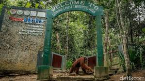

Tempat Wisata di Bukit Lawang
Bukit Lawang, yang terletak di tepi Taman Nasional Gunung Leuser, adalah destinasi utama bagi para pecinta alam dan petualangan. Terkenal dengan pusat konservasi orangutan yang mendunia, Bukit Lawang menawarkan pengalaman unik untuk melihat primata langka ini di habitat aslinya. Selain itu, kawasan ini juga menjadi surga bagi para penggemar trekking dengan jalur-jalur yang menantang, melintasi hutan hujan tropis yang lebat, sungai yang jernih, dan air terjun yang menakjubkan. Bagi pengunjung yang ingin merasakan petualangan sejati sekaligus menikmati keindahan alam yang tak tertandingi, Bukit Lawang adalah destinasi yang tidak boleh dilewatkan.

Pemandangan dari Bukit Kampret |

Pemandian Bukit Lawang |

Pemandangan Bukit Lawang |

Konservasi Orang Utan |